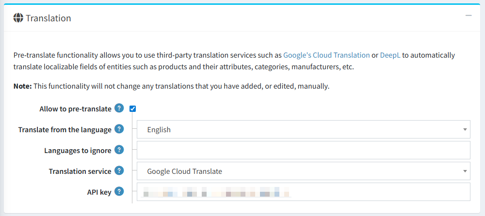
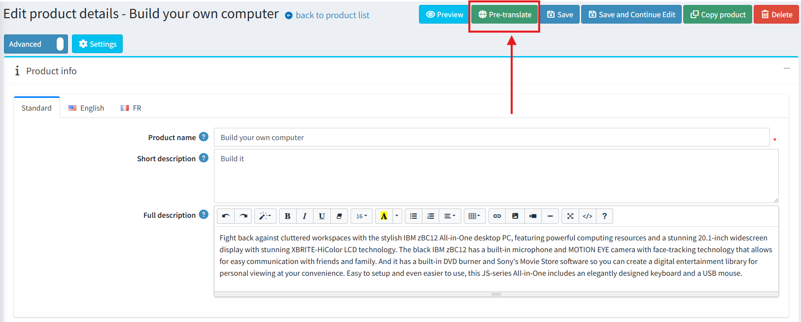
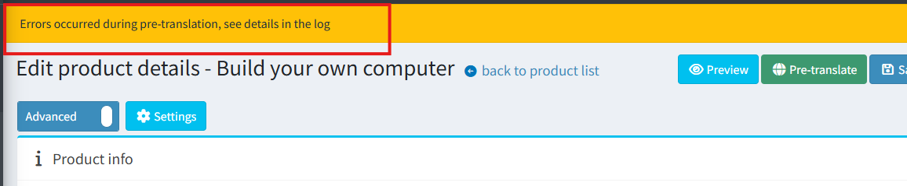

自動內容翻譯
概覽
此功能將自動翻譯能力整合至核心應用程式中，讓商店管理員能夠使用兩大主流機器翻譯平台：DeepL 與 Google Translate，將網站內容翻譯成多種語言。
目前，自動翻譯功能支援以下實體：
- 分類
- 製造商
- 商品
- 商品屬性
- 規格屬性
設定
此功能的所有設定皆位於 一般設定 頁面中的 翻譯 區塊。

關鍵設定選項包括：
- 允許預先翻譯 (Allow to pre-translate)：用來開啟或關閉整個翻譯功能的總開關。
- 翻譯來源語言 (Translate from the language)：在「標準」索引標籤中，您可以指定一個預設語言，作為所有翻譯的生成來源。
- 忽略的語言 (Languages to ignore)：排除在自動翻譯流程之外的語言列表。
- 翻譯服務 (Translation service)：用來選擇所要使用的翻譯服務（DeepL 或 Google Translate）的下拉式選單。
- DeepL：需要 Auth key。
- Google Translate：需要 API key。
Note
系統不會自動覆寫已手動儲存內容的欄位。
使用方式
一旦啟用該功能，使用方式非常直接。在所有支援實體的編輯頁面中，主要按鈕區塊會出現一個新按鈕。例如，在商品編輯頁面上，它看起來如下：

點擊 "Pre-translate" 按鈕。
若翻譯成功，將會出現確認訊息，其他語言的在地化欄位將會填入翻譯後的文字。

若翻譯過程中發生錯誤，將會顯示警告訊息。

Warning
請務必注意，此功能的作用為 預先翻譯 工具。翻譯後的內容會填入欄位中，但 不會自動儲存。這讓使用者擁有完全的控制權，能在手動儲存變更前，審閱、編輯或捨棄這些翻譯內容。